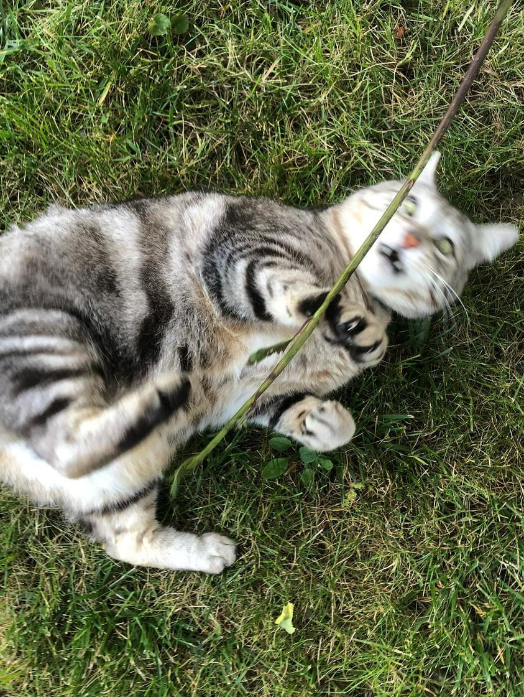
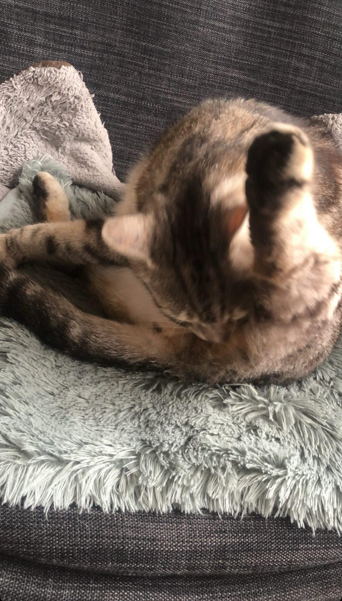

✩ LOS GATITOS ✩
✭ Bienvenue sur la page de Ronron ✭
Ses caractéristiques
Couleur des yeux: Jaune
Couleur des poils: Gris
Corpulance: Un peu enrobé (gros mais agathe ne veut pas l'admettre.)
Propriétaire: Agathe
Personnalité
Ronron est pas très sociable, il a l'air méchant la plupart du temps /ᐠ𝅒 ‸ 𝅒ᐟ\ﾉ
Il aime bien manger et est très très (trop) gourmant.
Agresse Agathe et les gens, mord et griffe, il est violent.Mais on l'aime quand même.
Fun fact
Il regarde toujours la pluie sur le canapé par la fenêtre et s' assissait dans les tirroirs de la soeur d'Agathe quand elle devait deménager.
Photo Bonus
Ronron possedé par le démon
"Il faut toujours être propre"/ᐠ ._. ᐟ\ﾉ
